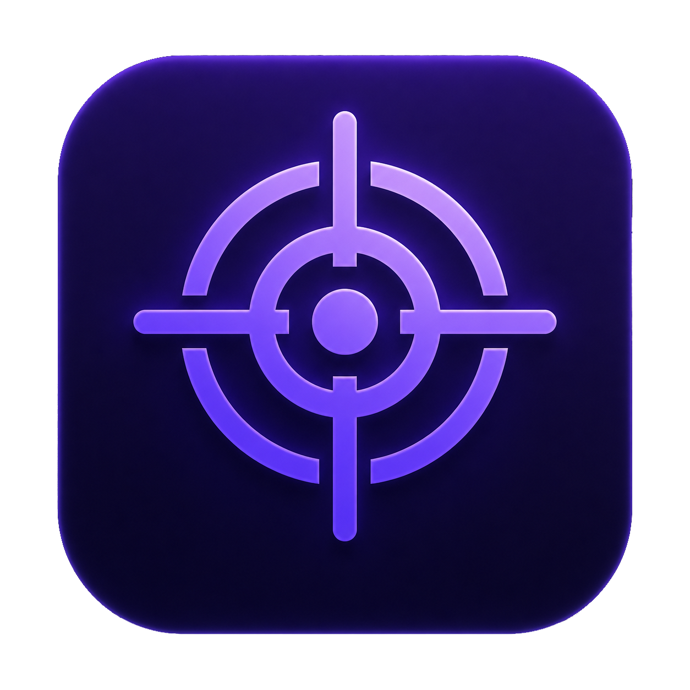
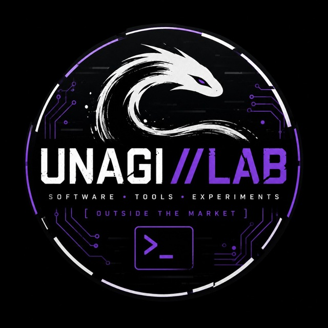
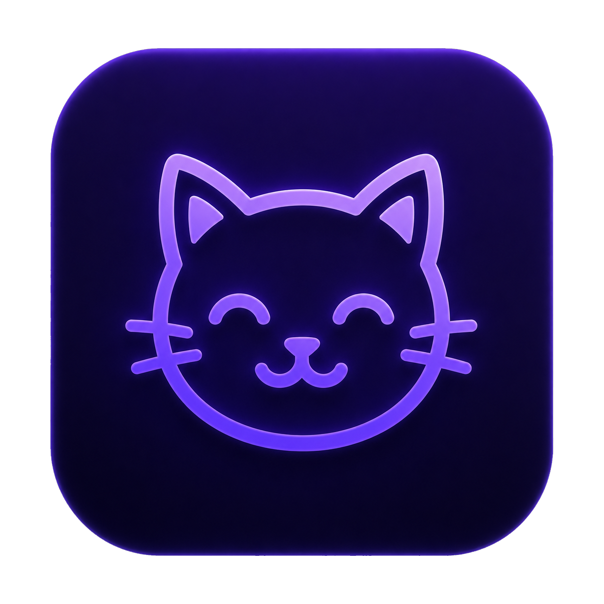

SuperPinger
Network diagnostics and monitoring for Android: live traffic, ping, host monitoring, traceroute, DNS, TCP/HTTPS checks, reports and Telegram alerts.
I build Android apps, Windows utilities, network tools and experimental software — focused on practical ideas, clean interfaces and things I actually want to use.

Published tools and experiments available through official app stores.

Network diagnostics and monitoring for Android: live traffic, ping, host monitoring, traceroute, DNS, TCP/HTTPS checks, reports and Telegram alerts.
Scan, create and organize QR codes. Batch scanning, custom designs, reusable styles, folders, favorites, backups and PNG/SVG/PDF export.

Digital wellbeing with cats. Screen-time limits, playful reminders, progress tracking and a deliberately less boring way to take a break from your phone.
Desktop utilities, integrations and experiments published on GitHub.
Windows companion for host monitoring, live ping charts, network tools, maps, traffic tracking and Telegram alerts.
Lightweight Windows utility that syncs currently playing media to your Telegram bio or emoji status using Windows SMTC and Telegram MTProto.
Experimental configurable PC input assistant exploring adjustable mouse compensation and automatic tapping.
The lab keeps changing. New utilities, prototypes and practical experiments appear on GitHub as they become ready to share.
I'm an indie developer from Kazakhstan building focused software around networking, Android, Windows and automation. UNAGI//LAB is where practical tools and strange little experiments live side by side.